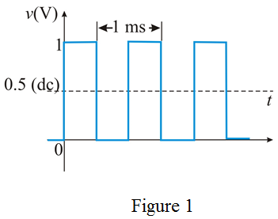

Step 1:
Refer to symmetrical square wave signal in Figure 1.5 in the textbook.
Write the symmetrical square-wave voltage signal expression.
…… (1)
Here,
V is the amplitude of the square wave and
Here,
 is the time period of the square wave
is the time period of the square wave
Write the expression for the characterized signal.
…… (2)
Step 2:
Compare equations (1) and (2).
Calculate the dc voltage value (or) average voltage value.
Therefore, the average value, is  .
.
Compare equations (1) and (2).
Calculate the voltage peak (or) amplitude value.
Therefore, the peak value,  is.
is.
Step 3:
Calculate the peak-to-peak voltage.
Therefore, the peak-to-peak voltage, is  .
.
The symmetrical square-wave with its level shifted by  .
.
Hence, the lowest value is  and the highest value is
and the highest value is  .
.
Step 4:
Calculate the angular frequency.
Therefore, the frequency, is .
Step 5:
Calculate the time period.
Therefore, the time period,  is .
is .
Step 6:
The square-waveform is shown in Figure 1.
